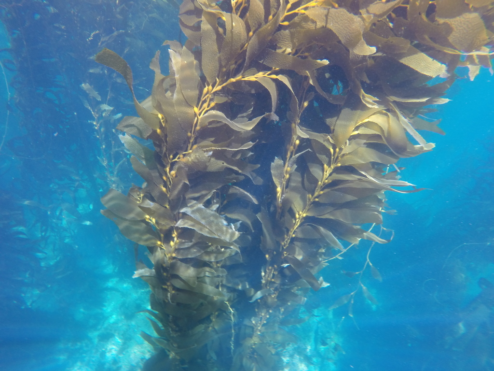

Hnědé řasy
V čem jsou speciální?
Hnědé řasy jsou většinou vícebuněčné organismy s lupenitou nebo vláknitou stélkou, některé druhy, například kelpy, mohou dorůstat až 50 metrů. Buňky obsahují chlorofyl a i c a pigment fucoxanthin, který jim dává typickou hnědou až olivovou barvu a umožňuje fotosyntézu. Zásobní látky ukládají ve formě laminarinu a manitolu, nikoli škrobu. Buněčné stěny jsou tvořeny celulózou a často obsahují průmyslově využívané algináty. Rozmnožují se střídáním pohlavní a nepohlavní fáze, někdy s komplikovaným cyklem gametofytu a sporofytu. Růst a tvar stélky jim umožňuje přizpůsobit se proudům a mořskému prostředí. Hnědé řasy jsou speciální svou stavbou těla, pigmentací, rozmnožováním a ekologickou rolí v mořských ekosystémech.
Příklad hnědé řasy
Macrocystis pyrifera
Macrocystis pyrifera je obrovská hnědá řasa, známá jako obří kelp. Dorůstá délky až přes 50 metrů a patří k největším řasám vůbec. Její tělo se skládá z ukotvovací části (holdfast), stonku (stipe) a listovitých čepelek (blades). Buňky obsahují chlorofyl a a c a hnědý pigment fucoxanthin, který umožňuje fotosyntézu i při nižším světle. Rozmnožuje se střídáním pohlavní a nepohlavní fáze, uvolňuje zoospory a gamety. Roste na skalnatých pobřežích v chladnějších mořích a tvoří rozsáhlé kelpové lesy.
